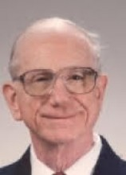

Please note: the AAS Obituaries are temporarily being hosted on this website while their full content is being ingested into the PubPub publishing platform newly adopted by the Bulletin of the American Astronomical Society. When the migration is complete, your existing links will take you to the final, migrated content. Contact peter.williams@aas.org with any questions.
J. M. Anthony Danby (1929-2009)
John Michael Anthony (Tony) Danby, 80, died on 8 Dec 2009 in Chester, Pennsylvania. Born in London, England, on 5 August 1929, Danby obtained his B.A. and M.A. in mathematics at Oxford University, where his father served as Regius Professor of Hebrew, followed by a Ph.D. in astronomy at Manchester University entitled “Some Problems in Cosmology and Stellar Dynamics.” After serving as a musician in the England’s Royal Artillery, he joined the London Philharmonic Orchestra as first chair oboist. In addition to musical performance, he recorded, for the BBC, an oboe sonata dedicated to him by the composer Stephen Dodgson.
In 1957, Danby immigrated to the U. S. to take up a teaching position at the University of Minnesota. He also taught part-time at Macalester College in St. Paul, where he met his future wife, Phyllis; they were married in 1958. While at Minneapolis, he wrote his classic textbook, Fundamentals of Celestial Mechanics, which was published in 1962 by Macmillan and is still in print. A review by William Liller in Science states that “this clearly written book covers … all the celestial mechanics with which every professional astronomer and senior space scientist should be acquainted.”
Danby subsequently joined the astronomy department at Yale University, which at the time included such notables in celestial mechanics as Dirk Brower, Morris Davis, Boris Garfinkel, Victor Szebehely, and during Summer 1962, visiting scholar George Contopoulos. While at Yale, Danby became a naturalized U. S. citizen on 11 February 1965. Two years later, he accepted a professorship in the Mathematics Department at North Carolina State University, where he remained until his retirement in 1998.
Danby co-authored some 40 research articles plus a second book, Astrophysics Simulations, published by Wiley in 1965 and designed to foster the application of computers to problems in astronomy. The software in the book won an excellence award from the journal Computers in Physics. Danby also developed and taught a course at NC State in computer modeling, which grew, by the time of his retirement, to an enrollment of three hundred students per semester. He received the university’s Outstanding Teacher Award in 1979 and an Alumni Distinguished Professorship in 1987.
In 1968, Danby served on the organizing committee involved in the creation of the AAS Division on Dynamical Astronomy. A minor planet was named after him in recognition of his contributions to the study of celestial mechanics. Maintaining his passion for music, Danby directed the Wake County Chapter of the North Carolina Symphony and founded the Raleigh Chamber Players. He was also actively involved in politics, serving as a Democratic party precinct chairman for four years. Danby and his wife Phyllis enjoyed cooking and hosting parties and fund-raisers, one of which had guest list approaching a hundred.
Photo credit: North Carolina State University
Obituary written by: Alan Hirshfeld (University of Massachusetts, Dartmouth)
Additional links:
BAAS Citation: BAAS, 2017, 49, 017